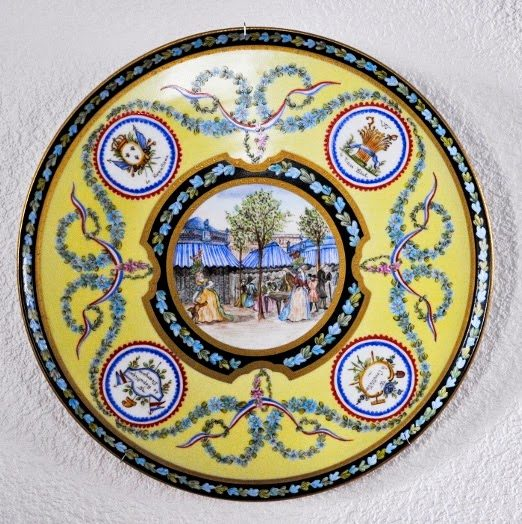

Décoration sur faïence et porcelaine
Création de décors et personnalisation d'objets sur commande accompagnant les évènements de la vie (naissance, anniversaire, mariage, jumelage, réception…), reproduction fidèle des faïences anciennes de Roanne avec le célèbre marinier roannais de la Loire.